第219期
トレーディア新聞社
定価 無料
新聞THE TREDIA SHIMBUN
夏季
本日14面
1面総合
泰平、金野伯爵領と開戦
テキスタンでは農場と都市を追加占領
金野は弾薬不足で剣と槍 なのです艦砲が金野・白波の部隊を直撃 藍岬の大都市も陥落
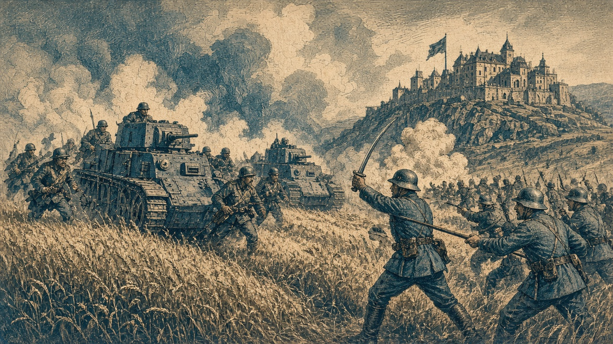
【総合部】第219期、泰平天国は金野伯爵領との戦争を開始した。控えどおりの開戦で、泰平の装甲が金野Corps4歩兵を全滅させ、山岳兵は二千八百人の戦果を挙げた。双方の当期損害は、泰平百人、金野二千八百人。金野軍は弾薬不足で剣と槍を使った。
同じ期、泰平はテキスタン共和国の農場二つ・精製所二つ・都市・海底油田を占領し、食糧八万四千百トンを徴発した。双方の損害は、泰平千八百人、テキスタン六千四百人。カペレナ王国は藍岬の大都市（82,23）を占領し、食糧二万二千二百トンを徴発した。
なのです主義人民共和国は金野・白波両戦線で艦砲を集中した。金野では軍港を破壊し、防衛施設を壊し、部隊への艦砲で一万四千百人の戦果を挙げた。白波の部隊にも四千九百人の戦果があった。双方が負った陸上損害とは別に、沿岸からの射撃が相手に戦果を積み上げている。旧蒼森周辺では、（17,10）にカペレナがミサイル基地を建設し、黒潮が整地した。両国はこの区画の領有をめぐって対立している。火災は二十四件、死者は九万八千七百人に達した。9面は桃谷連邦共和国を特集した。
泰平は金野との戦争を始めると同時に、テキスタンの穀倉地帯と工業拠点を押さえた。金野は弾薬不足を抱え、剣と槍で三つの敵国に向き合う。兵を集め直すにも食料と弾薬が要るが、いま伯領に残る食料は三千二百トンにすぎない。戦線の数だけでなく、補給の細さが守備側を追い詰めている。
艦砲は軍港や防衛施設を壊し、金野と白波の部隊にも大きな損害を与えた。陸上戦の損害表だけでは、沿岸の陣地に降り注いだ砲弾の重さが見えにくい。今期は占領、陸上戦、艦砲の三つが各地で重なった。
| 今期の主な数字 | |
|---|---|
| 泰平×金野（双方の損害） | 泰平100人・金野2,800人 |
| 泰平×テキスタン（双方の損害） | 泰平1,800人・テキスタン6,400人 |
| 徴発食糧（泰平） | 8万4,100トン |
| 艦砲戦果（金野部隊） | 1万4,100人 |
| 艦砲戦果（白波部隊） | 4,900人 |
| カペレナ×藍岬（双方の損害） | カペレナ1,800人・藍岬3,700人 |
| 宣戦控え | オリョルッル×藍岬（224） |
- 2面テキスタン占領詳報
- 3面なのです×金野
- 4面なのです×白波・橙原離島
- 5面藍岬大都市陥落
- 6面黒潮・カペレナ、（17,10）に基地と整地
- 7面火災九万八千人
- 8面弾薬と損害
- 9面国特集 桃谷
- 10面夏の空
- 11面官吏試験・解答例
- 12面入門 艦砲と部隊
- 13面短信
- 14面編集後記
2面国際 テキスタン
占領
泰平、農場・精製所・都市・海底油田を占領
食糧8万4,100トンを徴発 領土19→13 首都テキシャは残る
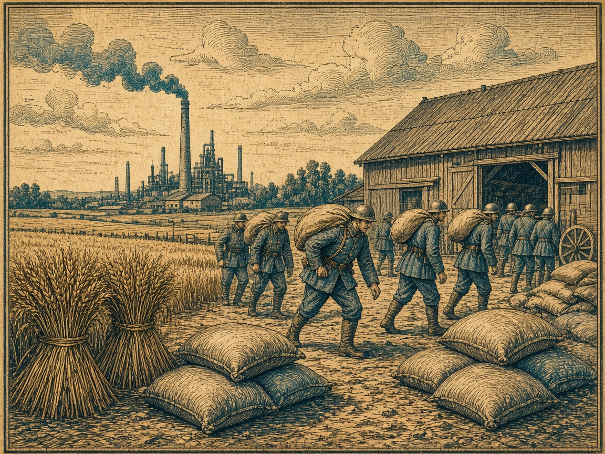
【国際部】泰平天国はテキスタン共和国の農場（37,15）（35,10）、精製所（35,13）（35,15）、都市（38,15）、海底油田（45,24）を占領した。食糧の徴発は農場と都市の合計で八万四千百トン。双方の損害は、泰平千八百人、テキスタン六千四百人。
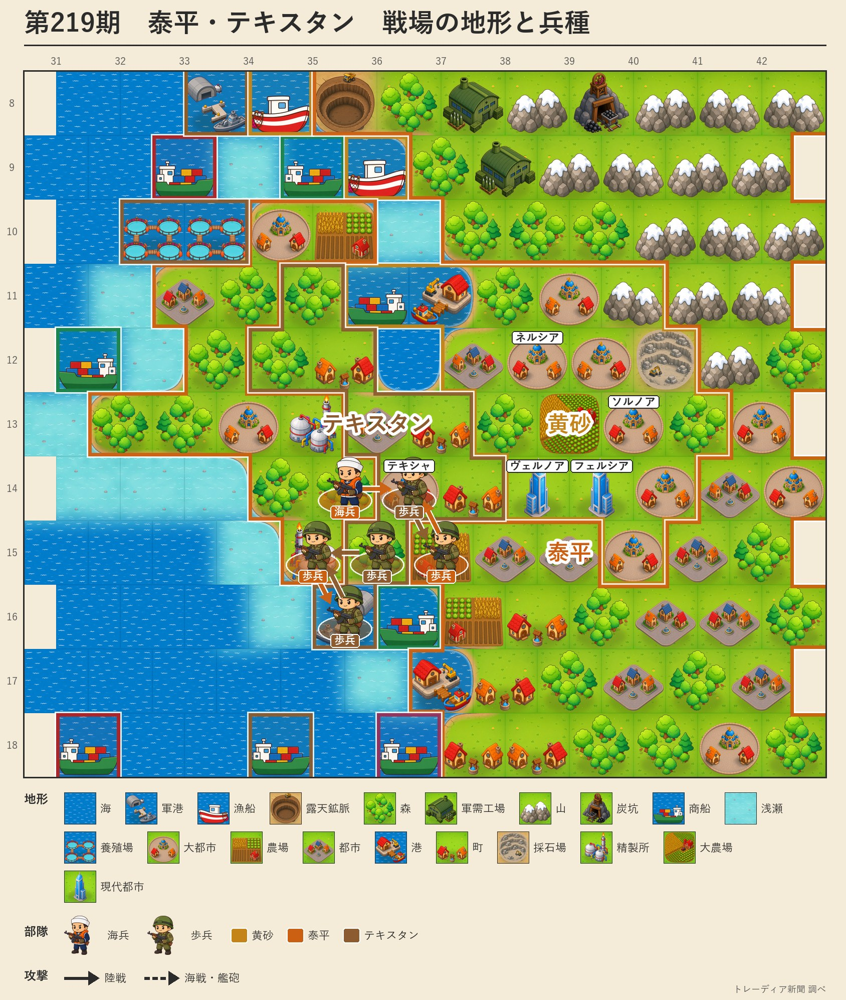
テキスタンの人口は五万人、領土十三区画へ減った。首都テキシャ（36,14）は残るが、北側の農場、精製所、都市は泰平領に移った。領土は十九区画から十三へ縮小し、海底油田も失った。帝国軍陣営で白波と並ぶテキスタンは泰平と交戦を続けている。
農場二か所と都市から持ち出された食糧は計八万四千百トン。大きな倉庫の戸が開かれ、穀物袋が泰平側の荷車へ積み替えられた。畑を耕す土地だけでなく、精製所と油田まで奪われたことで、テキスタンは食料と工業資源の両方を失った。首都の周囲に残る区画をどう守るかが、次の戦いを左右する。
| 泰平の今期占領 | |
|---|---|
| 農場（37,15） | 食糧2万5,200トン |
| 農場（35,10） | 食糧2万7,900トン |
| 都市（38,15） | 食糧3万1,000トン |
| 精製所 | （35,13）（35,15） |
| 海底油田 | （45,24） |

テキシャ 麦倉
倉が空でも、種は残す。
麦・雑穀。
テキスタン・テキシャ
3面国際 なのです×金野
艦砲
なのです艦砲、金野の軍港を破壊し部隊を削る
艦砲の戦果は金野部隊に1万4,100人 双方の陸上損害はなのです400人・金野4,800人 金野は剣と槍
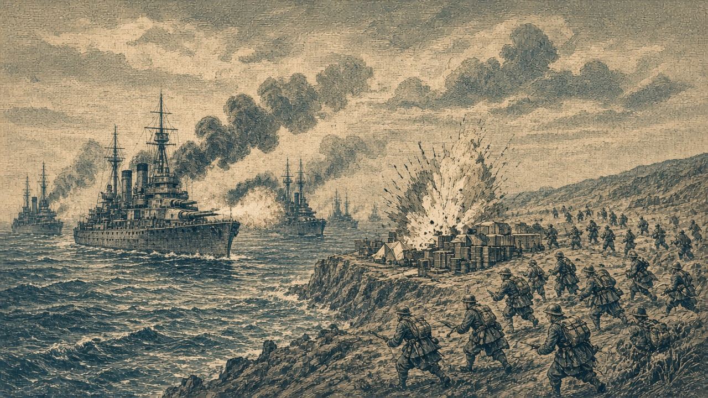
【国際部】なのです主義人民共和国は金野伯爵領への艦砲を強めた。軍港（63,12）は累計三発の命中で破壊され、防衛施設（65,14）も破壊された。ミサイル基地（63,14）へは一斉攻撃が命じられ、複数の戦艦が射撃を開始した。町（64,13）（64,14）（65,13）にも艦砲が命中した。記録された人口減少は三町で計四千六百人に上り、砲撃で住民が死亡した。
部隊への艦砲命中では、（64,12）で五千五百人、（65,15）で四千人、（64,14）で四千六百人の戦果があった。合計一万四千百人。陸上戦闘で双方が負った損害は、なのです四百人、金野四千八百人。海兵はCorps4歩兵に三千六百人の戦果を挙げた。金野側の反撃では部隊が全滅する記録も出た。
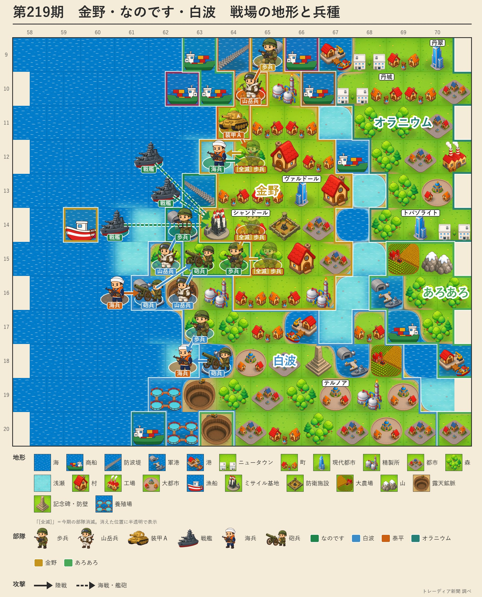
金野の食料は三千二百トンまで減り、複数の戦闘で弾薬不足のため剣と槍で応戦した。交戦相手はチェス、なのです、今期開戦した泰平の三か国。弾薬を欠いた部隊は銃火器を使えず、接近戦を強いられた。軍港と防衛施設も失い、沿岸の守りを立て直す時間は乏しい。
一方、なのです側の海兵は金野の歩兵に三千六百人の損害を与えたが、反撃で百人を失った。陸上部隊の攻撃と、沖合の戦艦による砲撃が同じ戦線で続き、金野軍は陸と海の双方から圧迫されている。
| 艦砲の戦果（金野部隊） | |
|---|---|
| （64,12） | 5,500人 |
| （65,15） | 4,000人 |
| （64,14） | 4,600人 |
| 合計 | 1万4,100人 |
| 双方の陸上損害 | |
|---|---|
| なのですの損害 | 400人 |
| 金野の損害 | 4,800人 |

電都 鋼材問屋
艦のあとにも、一本の釘を。
鋼材・釘。
なのです・電都
4面国際 なのです 白波・橙原
白波
艦砲が白波部隊（63,16）に命中
艦砲の戦果は白波部隊に4,900人 双方の陸上損害はなのです6,000人・白波1,300人
【国際部】なのですの艦砲は白波王国の部隊（63,16）にも命中し、四千九百人の戦果を挙げた。双方が負った陸上損害は、なのです六千人、白波千三百人。白波は同区画を含む複数地点で撤退を実施した。
白波は泰平とも交戦し、今期の損害は泰平千五百人、白波三千二百人。チェス、泰平、なのですとの三正面を抱える。白波軍は三地点で撤退し、前線の配置を引き直した。海上では駆逐艦一隻の建造を進めたが、巡洋艦と戦艦の建造は鋼鉄不足で中止。陸の損害を埋める兵力と、艦隊を増やす資材を同時に求められている。
橙原
なのです、橙原の兵站基地（44,58）のある離島を占領
予備兵1,000人投降 橙原は停戦を打診 領土1区画
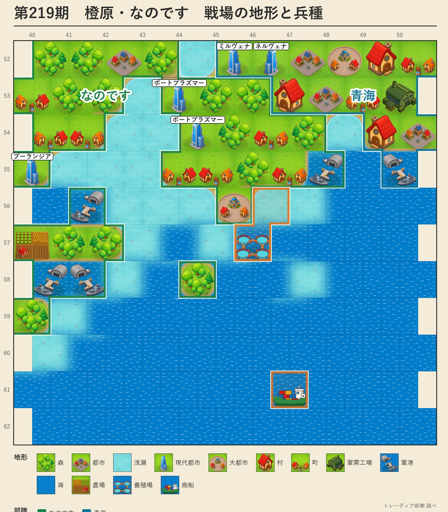
【国際部】なのです第6軍海兵は橙原のCorps2歩兵を全滅させ、兵站基地（44,58）のある離島を占領した。予備兵千人が投降。双方の損害は、なのです百人、橙原千六百人。橙原はなのですへ停戦を打診した。人口は千九百人、領土は一区画。首都欄に都市名はない。島の兵站基地と予備兵を失い、橙原の部隊は敗れた。占領された島を取り戻す余力は乏しく、停戦交渉の成否が唯一の領土と残る部隊の防衛に直結する。

テルノア 川港計器
三正面の週も、方位を。
方位盤・気圧計。
白波・テルノア
5面国際 藍岬
占領
カペレナ、藍岬の大都市（82,23）を占領
食糧2万2,200トンを徴発 双方の損害はカペレナ1,800人・藍岬3,700人 藍岬は停戦を打診
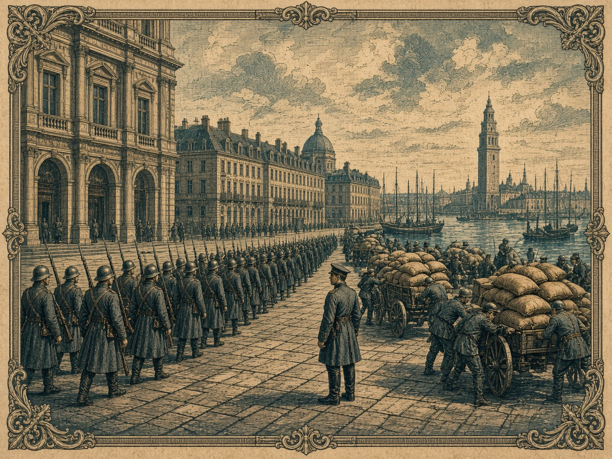
【国際部】カペレナ王国は藍岬共和国連邦の大都市（82,23）を占領し、食糧二万二千二百トンを徴発した。西進隊の海兵がCorps2歩兵を全滅させた。双方の損害は、カペレナ千八百人、藍岬三千七百人。
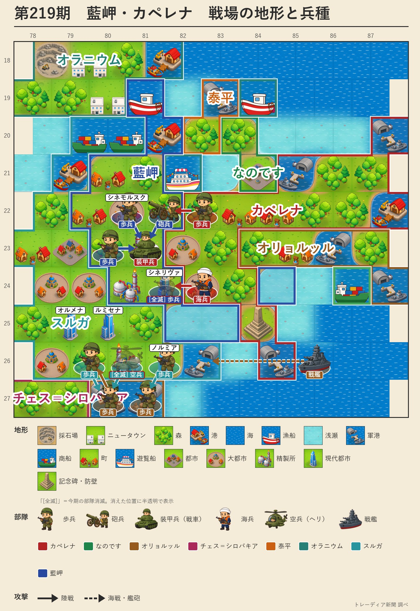
藍岬はカペレナ、オラニウム、なのですの三か国へ停戦を打診した。人口二万八千人、領土十三区画。首都シネモルスクは残るが、軍港に続く大都市を失い、沿岸防衛の拠点は一段と減った。
大都市から徴発された食糧は二万二千二百トン。市街の倉庫に積まれていた穀物はカペレナ軍の輸送に回り、藍岬側の住民と守備隊には戻らない。藍岬が求めた停戦は三か国それぞれとの交渉になる。攻め込むカペレナのほか、別戦線を抱える相手にも同時に働きかけた形で、回答がそろうかは見通せない。
| カペレナ×藍岬 | |
|---|---|
| 占領 | 大都市（82,23） |
| 徴発 | 食糧2万2,200トン |
| カペレナの損害 | 1,800人 |
| 藍岬の損害 | 3,700人 |
| 藍岬 | 停戦打診中 |

シネモルスク 岬灯具
大都市のあとに、港の灯りを。
ランプ・方位盤。
藍岬・シネモルスク
6面国際 黒潮・カペレナ
領有問題
黒潮とカペレナ、（17,10）に基地と整地 領有をめぐり緊張
カペレナは基地建設、黒潮は（17,10）を整地 両国は交戦していない
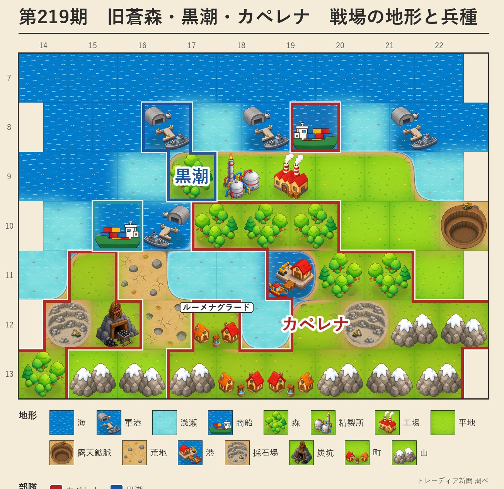
【政治部】旧蒼森辺境伯領の跡地（17,10）で、カペレナ王国はミサイル基地を建設し、黒潮自治国は同じ区画を整地した。黒潮は別に部隊設置も行った。期末の地図で（17,10）はカペレナ領。黒潮の陸上領は四区画で、軍港（16,8）と平地（17,9）を足場にしている。
一つの区画に基地建設と整地が重なった。カペレナ側が基地を置き、黒潮側は同じ期にこの区画を整地した。双方がこの土地を自国の安全に関わる場所と見ていることがうかがえる。黒潮には陸上領が少なく、海底都市から陸へ戻る足場を守りたい事情がある。カペレナにとっては、蒼森が消えた後の南北の通路に施設を置く意味が大きい。
両国はいま交戦していない。第197期の停戦で戦争が終わって以来、黒潮に交戦国はなかった。蒼森の消滅で中立地となった一帯で、基地建設と整地が同じ区画に重なった。地図上の領有と軍事施設の配置が食い違っている。外交筋は、基地の稼働や周辺への増派が続けば、双方が安全保障上の脅威と受け止めるとみる。宣戦が出る前に、どちらが区画を管理するのか話し合う必要がある。
カペレナは藍岬戦線で大都市を占領し、複数の敵国とも交戦中だ。黒潮は人口三万四千百人、領土四区画で、陸上進出の足場を失えば海底都市に閉じ込められる。両国は別々の陣営に属し、周辺国もそれぞれの動きを警戒する。今期は戦闘が起きていないが、基地を置いた国と整地した国が同じ地点にいる。次に部隊を動かす前に、領有をめぐる対話ができるかが焦点となる。
外交
停戦打診は合意なし オリョルッルは藍岬へ宣戦
【外交部】藍岬はカペレナ・オラニウム・なのですへ、橙原はなのですへ、スルガはオリョルッルとカペレナへ、翠湖は黄砂へ、シンジケートはカペレナへ、それぞれ停戦を打診した。いずれも今期は合意に至っていない。
オリョルッル王国は藍岬へ宣戦布告し、開戦は第224期。五期後に戦闘が始まる予定だ。スルガとオリョルッルの戦闘では、スルガ四千八百人、王国千二百人が損害を受けた。スルガは王国とカペレナの双方へ停戦を打診しており、戦線の整理を急ぐ。
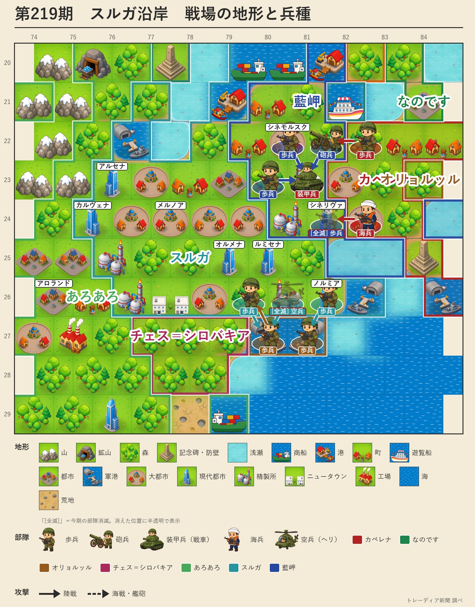
| 期 | 宣戦控え |
|---|---|
| 224 | オリョルッル×藍岬 |
フィルノア跡 潮見計器
空白の岸でも、方位を。
方位盤・気圧計。
黒潮・外洋航路
7面社会 火災
災害
火災二十四件 九万八千七百人が死亡
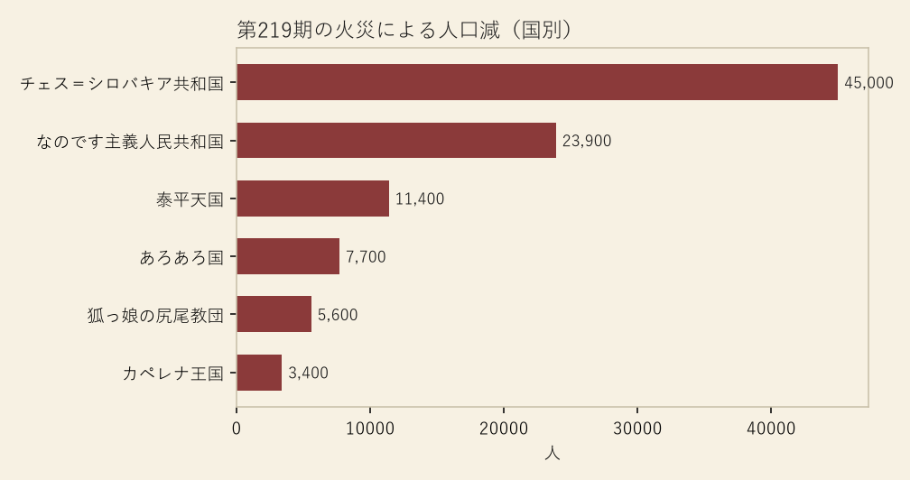
【社会部】第219期の火災は二十四件、死者は九万八千七百人に達した。チェス＝シロバキア共和国が四万五千人で全体の四割を超え、なのです主義人民共和国は二万三千九百人、泰平天国は一万千四百人。
あろあろ国七千七百人、狐っ娘の尻尾教団五千六百人、カペレナ王国三千四百人。件数は前期より三件増え、死者は約一万八千人多い。チェス一国で四万五千人が死亡し、全体の半数近くを占めた。
火災は畑や家屋だけでなく、町の働き手を一度に奪う。焼け跡に残るのは崩れた梁と、運び出せなかった道具だ。家族を失った住民は近隣の集落へ移り、火が収まった後も、パンを焼く職人や荷を運ぶ人が足りない。死者が集中したチェスでは、戦場へ送る兵だけでなく、日々の食料を作り直す人手も大きく減った。
なのです主義人民共和国では二万三千九百人、泰平天国では一万一千四百人が死亡した。いずれも広い領土の各地で火災が続き、消防と復旧に人員を割くことになる。戦時の動員と同じ町で災害が重なれば、住民の暮らしを支える仕事はさらに遅れる。二十四件という件数以上に、死者の多さが各国の復旧力を削っている。
電都 粉挽き組合
焼け跡のあとに、新しい粉を。
麦粉・雑穀。
なのです・電都
8面経済・国土
相場
弾薬は8.60 金野は剣と槍の戦闘
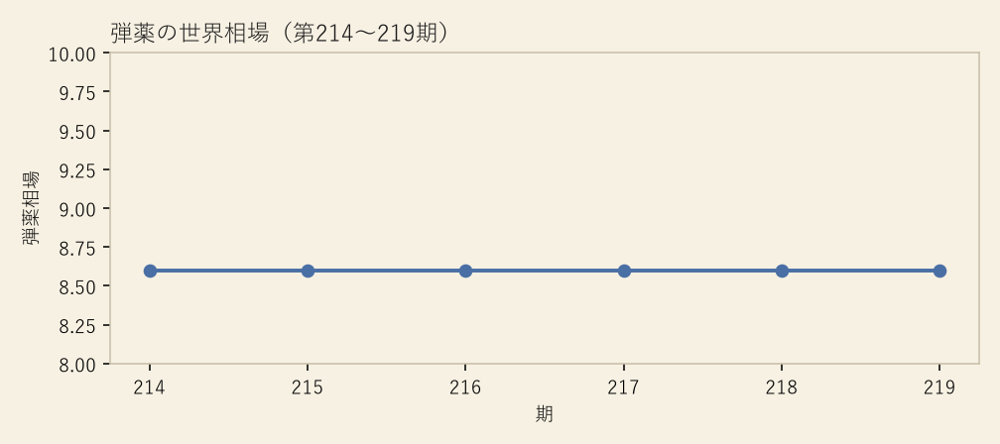
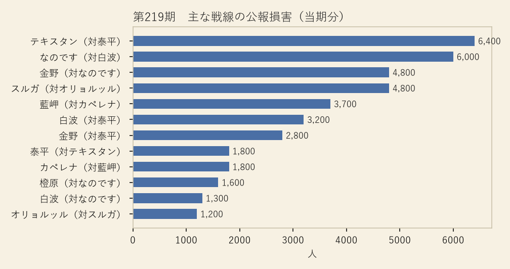
世界相場の弾薬は8.60で横ばい。金野では複数の戦闘で弾薬が不足し、部隊は剣と槍で戦った。相場が動かなくても、必要な場所へ弾薬が届かなければ前線では銃を使えない。金野は食料も三千二百トンまで減り、補給の両輪を欠いたまま三か国と戦う。双方の陸上損害の棒グラフには、艦砲の戦果（金野部隊一万四千百人・白波部隊四千九百人）を含めていない。海からの砲撃は3・4面の表で確認したい。
更新
画面の版に大きな変更なし
【経済部】今期、画面の大きな更新はなかった。前期から使われている自国駆逐艦への乗船順、「船待ち」表示、国の総経験の案内に変更はない。積み港を選び直す機能や、定期輸送の受取港を変える設定もそのまま使われている。
艦船の建造が続く一方、白波では巡洋艦と戦艦の計画が鋼鉄不足で止まった。画面上の手順が変わらなくても、工場に届く資材がなければ船台は空く。弾薬の相場が横ばいの金野も、実際の在庫不足で剣と槍の戦闘を強いられた。今期の記録は、価格表示と各国の手元の在庫が別の問題であることを示している。
諸国算盤店
艦砲の人数も、珠で確かめる。
算盤・台帳。
各地の算盤店
9面国特集 桃谷連邦共和国
国特集
桃谷連邦共和国 花の谷と、戦争のない週
人口2万2,500 兵力8万9,600 領土3 戦争なし
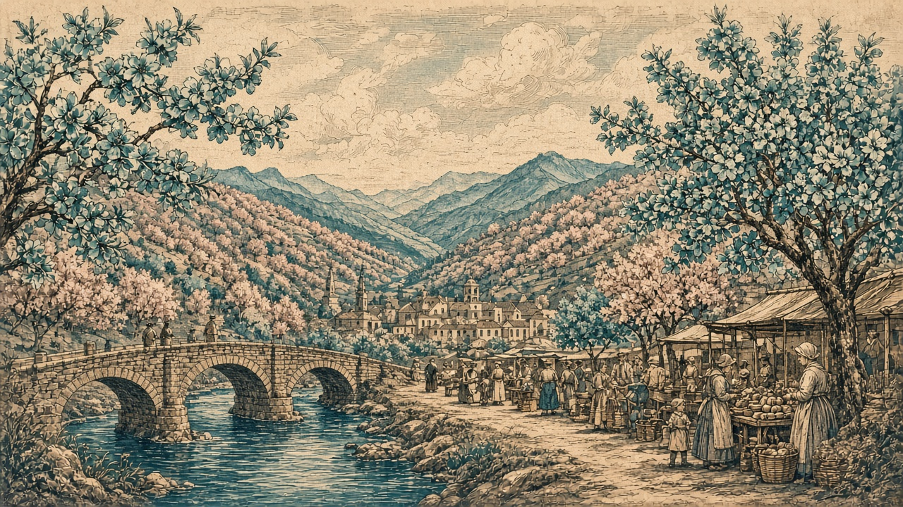
【特集部】桃谷連邦共和国は人口二万二千五百人、兵力八万九千六百人、領土三区画。食糧は四十四万四千五百トン、国庫は一兆七十億円。現在、交戦国はない。首都はナンサプ（42,39）。国の表明欄には「桃の花が咲く谷の連邦共和国」と記されている。
連邦軍の一員としてスルガ、藍岬、翠湖、橙原と並ぶ。自国周辺では今期、部隊を配置した。谷の市場には桃のシロップと干し桃が並び、石橋のたもとでは花びらを紙に挟む栞づくりが夏の手仕事になっている。
ナンサプの朝市では、農家が籠に詰めた桃を橋の両側に広げる。熟した実はその日のうちに売り、傷のあるものは煮詰めてシロップにする。長く保存する干し桃は、谷の外へ出る商人にも手に取りやすい。三つの領土を結ぶ道と橋は小国の暮らしを支え、首都の市場には周辺の品が集まる。
人口二万二千五百人に対し、兵力は八万九千六百人。人口を大きく上回る兵力を抱える小国だ。交戦国はないが、連邦軍の一員として周辺国の情勢を見守る。桃の収穫と市場の往来を守るには、谷へ通じる道を保つ必要がある。次号はシンジケート連邦を取り上げる。
| 桃谷連邦共和国 | |
|---|---|
| 人口 | 2万2,500人 |
| 兵力 | 8万9,600人 |
| 領土 | 3区画 |
| 食料 | 44万4,500トン |
| 国庫 | 1兆70億円 |
| 戦争 | なし |
ナンサプ、桃の花、石橋、シロップ、干し桃、栞工房。
ナンサプ 桃工房
花のあとに、一冊の栞を。
干し桃・栞。
桃谷・ナンサプ
10面気象
実況
夏の空 曇りが多く雪は三十一
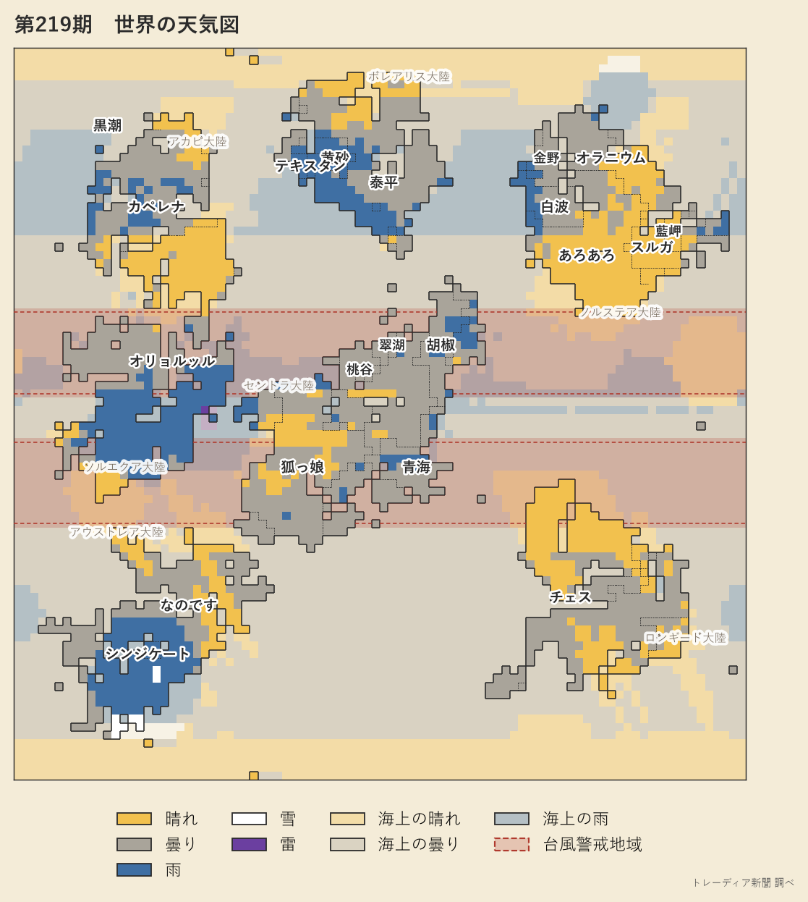
晴れ二千二十二、曇り四千八百三十八、雨千二百四、雪三十一、雷五。曇りが約六割を占めた。雪は前期の五区画から三十一へ増え、高地に残る冷えが目立つ。晴れは十九区画減、雨は三十九区画減となった。
雲が広がる一方で、雨の区画は前期を下回った。農作業では日照の短さと水不足が同時に気掛かりとなり、地域ごとの降り方を見て種まきや収穫の段取りを変える必要がある。高地では雪が増え、山越えの街道を使う荷運びは早めの通行確認が欠かせない。
第220期の予報図には台風警戒帯を重ねた。港の出入りや長距離航海を予定する商船は、予報図と海流図を照らし合わせ、帯を避ける航路を選びたい。警戒帯に近い港では、出帆を急がず、風向が落ち着く時刻を確かめる判断も必要になる。
見通し
第220期予報 沿岸は警戒帯を確認
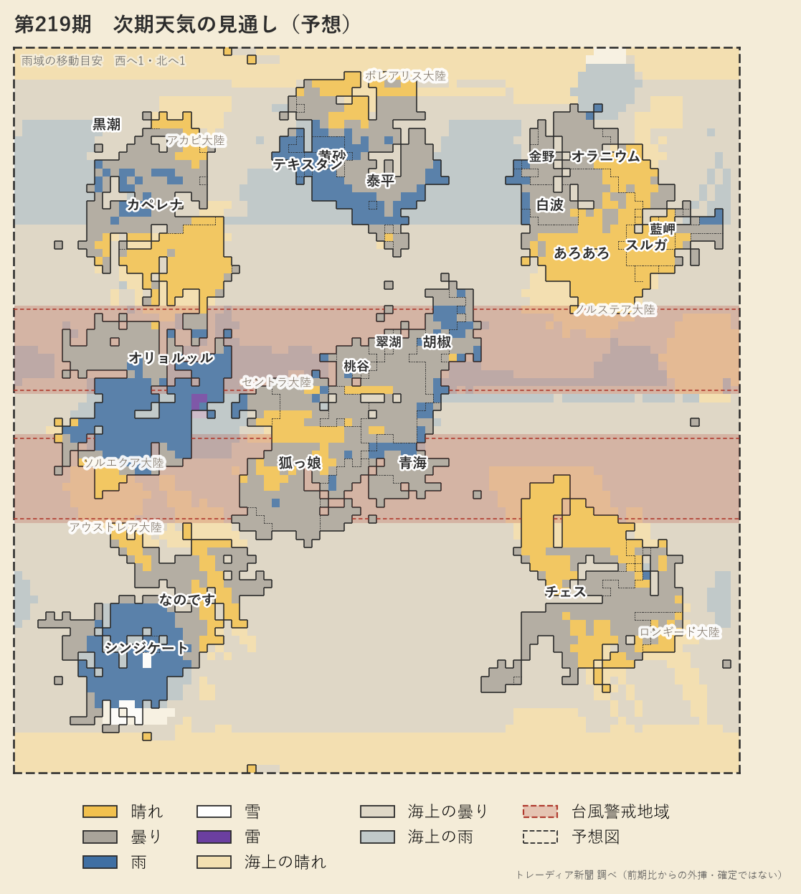
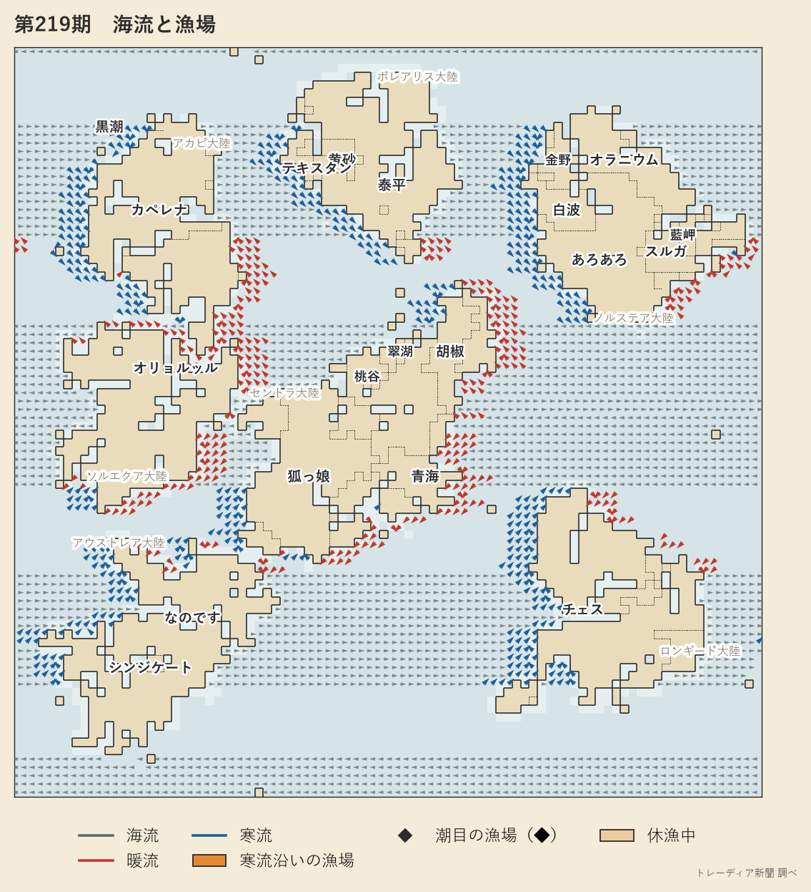
天都 和紙店
号外の紙を、整え直す。
和紙・朱墨。
泰平・天都
11面文化
官吏
電都で官吏登用試験
資料論述と人物面接
資料の読み取りと文章力を問う 過去問に本紙の解答例・採点予想
【文化部】なのです主義人民共和国の首都・電都で、今期の官吏登用試験が行われた。前段は資料を読み、条件に沿って論じる筆記試験。表の数字を正しく引用し、指定字数にまとめる力が問われる。後段の面接では、受験者の考え方や窓口での応対を試験官が確かめた。
面接は三人一組の試験官が担当し、窓口での受け答えや希望する配属先を尋ねる。官吏の仕事は、住民台帳と食糧配給の照合、港の入出港許可、徴兵名簿の整理、納税の受け付け、火災後の罹災届など幅広い。採用後は区役所や港務課で実務を覚え、住民と現場の双方を支える。
試験の運営を担うのは、採用後の官吏に実務を教える官吏養成所だ。同所は受験案内として論述の過去問を公開した。本紙は設問を掲載し、解答例と採点の見立てを添えた。受験を終えた一人は「表の数字を落とさないよう、時計を見ながら書いた」と振り返る。資料を読み、限られた字数で筋道を立てる力は、記録を扱う官吏の仕事にも役立つ。
| 今期の試験 | |
|---|---|
| 前段 | 論述（資料読解） |
| 後段 | 面接（人物） |
| 配属例 | 区役所・港務課 |
過去問
論述 資料読解問題（過去問）
今回の論述問題を掲げる。下段に本紙の解答例を載せる。
| 表 小説投稿サイトにおける語句別検索件数 | |||||
|---|---|---|---|---|---|
| 投稿サイト | 悪徳貴族 | 悪役令嬢 | 悪役令息 | 悪徳領主 | 悪役艦娘 |
| 小説家になろう | 169 | 28,439 | 338 | 87 | 0 |
| カクヨム | 120 | 7,175 | 254 | 51 | 0 |
| ハーメルン | 8 | 335 | 7 | 12 | 0 |
| 合計 | 297 | 35,949 | 599 | 150 | 0 |
※検索件数は、必ずしも当該語句を主題とする作品の数を示すものではない。
※「艦娘」とは、ゲーム『艦隊これくしょん―艦これ―』に登場する、軍艦を擬人化した女性キャラクターを指す。
資料読解・論述問題
次の表は、小説投稿サイト「小説家になろう」「カクヨム」「ハーメルン」において、特定の語句で作品を検索した際の該当件数をまとめたものである。
問
上の表によると、「悪役令嬢」は三つの小説投稿サイトにおいて合計35,949件もの検索結果が得られている。一方、同じく女性キャラクターを題材とする「悪役艦娘」は、いずれの投稿サイトにおいても0件となっている。
特に、二次創作小説が数多く投稿されているハーメルンにおいてさえ、「悪役艦娘」という語句に該当する作品が存在しない点は注目に値する。
なぜ「悪役令嬢」が一大ジャンルとして確立されている一方で、「悪役艦娘」というジャンルは成立していないのだろうか。
悪役令嬢ものの物語構造と『艦隊これくしょん』の世界観の相違、登場人物に求められる役割、読者の嗜好及び二次創作文化の特徴などを踏まえ、あなたの考えを600字以上800字以内で論じなさい。
なお、解答に当たっては、表中の具体的な数値を引用するとともに、「悪役艦娘」というジャンルが今後成立する可能性についても言及すること。
本紙
解答例（本紙編集部・669字）
公式の模範解答ではない。過去問に対する本紙の解答例である。
表によると、「悪役令嬢」の検索件数は三つの投稿サイトの合計で35,949件に達する一方、「悪役艦娘」は0件である。特に、二次創作が盛んなハーメルンにおいても、悪役令嬢が335件存在するのに対し、悪役艦娘は皆無である。この差が生じた背景には、物語の構造、原作の世界観、読者の嗜好の違いがあると考える。
第一に、悪役令嬢ものが成立するためには、主人公にあらかじめ悪役としての役割と破滅の運命が与えられていることが重要である。婚約破棄や国外追放などの危機を回避することが物語の原動力となる。しかし、『艦隊これくしょん』では、艦娘は基本的に共通の敵と戦う仲間であり、特定の艦娘が他の艦娘を妨害し、最終的に断罪されるという物語構造は原作に存在しない。そのため、悪役令嬢ものの構造をそのまま適用することは難しい。
第二に、読者が登場人物に求める役割の違いが挙げられる。悪役令嬢ものでは、主人公が周囲の評価を覆し、幸福を獲得する過程が重視される。一方、艦娘の二次創作では、原作のキャラクターへの愛着を背景として、提督との交流や艦娘同士の友情、戦闘などが描かれる傾向がある。既存の艦娘に悪役としての役割を与えることは、その人物に対する読者の愛着と衝突する可能性がある。
第三に、ジャンル名の定着度の違いがある。艦娘が理不尽な扱いを受け、鎮守府から追放された後に名誉を回復する物語が存在したとしても、それは「ブラック鎮守府」や「追放もの」などに分類され、悪役艦娘とは呼ばれない可能性がある。したがって、検索件数が0件であることは、類似した物語が存在しないことを必ずしも意味しない。
しかし、艦娘への転生、提督との関係悪化、鎮守府からの追放、轟沈する運命の回避などを組み合わせれば、悪役令嬢ものの構造を応用することは可能である。悪役艦娘が存在しないのは、題材として成立し得ないからではなく、独立したジャンルとして認識される段階に至っていないためだと考える。
採点予想
採点ポイントの予想（100点満点）
本紙が過去の出題傾向から予想した配点である。養成所の公式基準ではない。
| 評価項目 | 配点 |
|---|---|
| 表中の具体的な数値を正しく引用している | 10点 |
| 悪役令嬢ものの物語構造を理解している | 20点 |
| 艦これの世界観との相違を分析している | 20点 |
| 読者の嗜好及び二次創作文化を考察している | 15点 |
| 検索件数と実際の作品数の違いを理解している | 15点 |
| 悪役艦娘というジャンルの成立可能性を論じている | 10点 |
| 文章構成・論理性・表現・字数 | 10点 |
| 合計 | 100点 |
採点では、検索結果が0件という事実から「悪役艦娘」を描く物語まで成立しないと結論づけない点を重く見る。語句の普及度と物語の型の成立可能性を分け、今後どんな作品が読者に届くかまで論じているかが要点だ。
「艦これ」の基礎知識はなのですの義務教育で教えられているが、本問では、現代文学の動向を日々学び、艦これを二次創作へと落とし込む力も問われている。
電都 文具協同
論述の机にも、一本の筆を。
筆・原稿用紙。
なのです・電都
12面入門講座
入門第67回
艦砲と部隊 着弾が損害になるとき
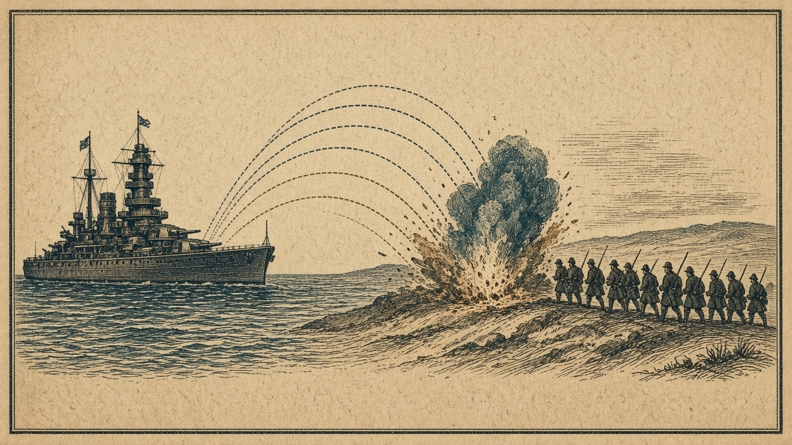
【編集部】艦砲射撃は、艦が陸地の施設や部隊へ砲を向ける攻撃だ。施設への命中は破壊や累計発数として公報に出る。部隊への命中は兵力を減らし、町への命中は人口を減らす。
今期のなのですは金野の軍港・防衛施設を壊したほか、艦砲の戦果として金野部隊へ合計一万四千百人、白波部隊へ四千九百人を数えた。戦争欄の双方の損害（陸上で各国が負った死者・負傷者）とは別に読むと、沿岸火力の重さが分かる。
記録を読むときは、①射撃した艦の所属、②着弾先が施設・部隊・町のどれか、③施設の破壊、部隊の損害、町の死者、④陸上戦で各軍が受けた損害、の順に整理するとよい。金野では軍港と防衛施設が壊れ、部隊に一万四千百人、町に四千六百人の犠牲が出た。これらは陸上戦の損害とは別の記録である。
同じ戦艦の砲撃でも、当たる場所で紙面に書く結果は変わる。施設に命中すれば累計発数が進み、必要数に達すると施設が破壊される。部隊に命中すれば兵力への戦果となり、町に命中して人口が減れば住民の死者となる。今期の白波部隊への四千九百人も、陸上戦で白波軍が負った千三百人とは分けて数える。
金野は弾薬が足りず剣と槍で戦った。これは陸上部隊の攻撃手段の変化で、沖合から撃つ艦砲とは別の要因だ。三つの数字を一つの損害欄に混ぜず、誰がどこから攻撃し、何が壊れたかを追えば、海と陸の戦況を読み違えずに済む。
- 施設命中と部隊命中を分ける
- 双方の損害と艦砲の戦果を分けて書く
- 弾薬不足の陸上戦も別行で書く
諸国算盤店
着弾の人数を、珠で確かめる。
算盤・台帳。
各地の算盤店
13面短信
泰平×金野 開戦。損害は泰平100人、金野2,800人。装甲がCorps4を全滅。金野は弾薬不足で剣と槍。
泰平×テキスタン 農場2・精製所2・都市・海底油田を占領。食糧8万4,100トン徴発。双方の損害は泰平1,800人、テキスタン6,400人。
なのです×金野 双方の陸上損害はなのです400人、金野4,800人。艦砲で軍港・防衛施設を破壊。艦砲の戦果は金野部隊に1万4,100人。
なのです×白波 双方の陸上損害はなのです6,000人、白波1,300人。艦砲の戦果は白波部隊（63,16）に4,900人。白波は複数地点で撤退。
なのです×橙原 兵站基地（44,58）のある離島を占領、予備兵1,000投降。双方の損害はなのです100人、橙原1,600人。橙原は停戦打診。
カペレナ×藍岬 大都市（82,23）占領、食糧2万2,200トン徴発。双方の損害はカペレナ1,800人、藍岬3,700人。藍岬は三国へ停戦打診。
スルガ×オリョルッル 双方の損害はスルガ4,800人、オリョルッル1,200人。スルガは停戦打診。
宣戦 オリョルッル→藍岬（224開戦）。
黒潮×カペレナ （17,10）でカペレナはミサイル基地を建設、黒潮は整地。黒潮は別に部隊設置も行った。期末はカペレナ領。両国は交戦していない。
黒潮 交戦国なし。領土4、人口3万4,100。軍港（16,8）・平地（17,9）を維持。
火災 24件で9万8,700人死亡。チェスだけで4万5,000人。
民間契約 狐っ娘の尻尾教団の民間部門と、なのです主義人民共和国の民間部門が石材20単位を18期ごとに2回届ける契約。
白波造船 駆逐艦の建造を実行。巡洋艦と戦艦は鋼鉄不足で中止。
鉱山・油田 （41,49）を段階8へ拡張。資金700億円、石材10単位、木材10単位を投入。
セルヴァナ 桟橋茶舗
号外のあとに、一服。
麦茶・塩豆。
青海・セルヴァナ
14面編集後記
今号、泰平は金野に宣戦し、テキスタンでは農場二か所、精製所二か所、都市、海底油田を占領した。金野は弾薬不足で剣と槍を使い、食糧は三千二百トンまで減った。チェス、なのです、泰平との三正面で、弾薬と食料の不足をどう補うかが防衛の課題になる。
なのですの艦砲は、金野の軍港と防衛施設を破壊した。金野部隊への戦果は一万四千百人、白波部隊は四千九百人。町への砲撃で金野の住民四千六百人も死亡した。陸上の損害表だけでは、この沿岸砲撃の被害は見えない。施設、部隊、住民、それぞれの数字を分けて読む必要がある。
藍岬は大都市を失い、カペレナ、オラニウム、なのですへ停戦を打診した。オリョルッル王国は第224期に藍岬との開戦を控える。停戦の働きかけと宣戦が同じ海域で進み、藍岬の外交は厳しい局面に入った。
旧蒼森辺境伯領では、黒潮が（17,10）を整地し、別に部隊設置を行った。同じ期にカペレナは同区画へミサイル基地を建設。期末の領有はカペレナ。今期は交戦していないが、黒潮にとっては陸上への足場を保つ問題、カペレナにとっては基地を置いた区画の防衛問題となる。部隊が増えれば偶発的な衝突の危険も高まる。双方が地図上の線を実際の戦闘へ変える前に、管理の境界を定められるかが問われている。
戦闘の数字だけでなく、食料や弾薬、鋼鉄の不足も各国の選択を狭めている。港と工場を押さえた国が有利になる一方、焼けた町から人手を戻すには時間がかかる。補給拠点や弾薬・鋼鉄の備蓄も、戦争を続ける力を左右する。